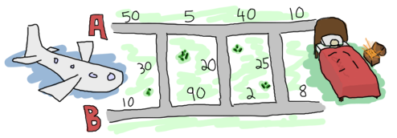
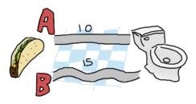
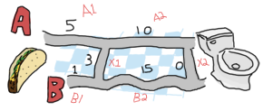
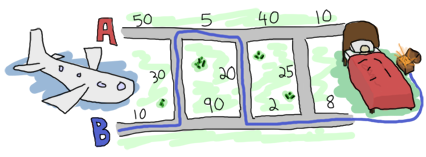

Functionally Solving Problems
Giống như việc uống một cốc nước ép trái cây giải khát, sau một hôi tập luyên. Trong chương này tôi sẽ không đưa ra bất kỳ một lí thuyết mới nào mà thay vào đó tôi sẽ chỉ cho bạn thấy một số cách vận dụng những gì mà chúng ta đã thấy trước đó. Các vân đề trong chương này phần lớn sẽ dựa trên cuốn sách Learn You a Haskell của tác giả Miran. Đối với các ví dụ, tôi cũng sử dụng cách giải quyết tương tự, do đó đối với độc giả hiếu kỳ , họ có thể xem và so sánh các đoạn mã giữa Erlang và Haskell theo ý họ muốn. và nếu bạn làm điều đó, bạn chắc chắn sẽ đi đến kết luận chung việc hay ngôn ngữ với hai cú pháp khác nhau nhưng cách giải quyết khá giống nhau. lí giải cho việc này là bởi vì hai ngôn ngữ này đều dựa trên khái niệm cơ bản về hàm, do đó có thể dễ dang chuyển đổi sang các ngôn ngữ lập trình hàm khác nhưng về mặt logic vẫn không đổi.
Reverse Polish Notation Calculator
Trong toán học hay trong lập trình, phần lớn moi người đều được học cách viết các biểu thức số học
cùng với các toán tử đặt giữa các con số ((2 + 2) / 5). Nó cũng là cách mà các máy tính số thực hiện với việc chèn các
biểu thức toán học theo thứ tự như vậy, và ở trường chắc hẳn bạn cũng được dạy như vậy.
tuy nhiên nếu để ý bạn sẽ thấy cách làm này có một nhược điểm là bạn phải biết được độ yêu tiên của các toán tử hay nói cách dễ dàng là thư tự thực hiện của các phép tính,
chắc hẳn trong toán học bạn cũng biết rằng thứ tự yêu tiên của các phép nhân, chia thì cao hơn các phép công trừ.
Ngoài ra có một cách viết khác nữa mà ít người biết tới, cách viết này còn gọi với cái tên là tiền tố ( prefix notation) hoặc balan ( Polish notation),
với cách viết này, các toán tử sẽ được viết trước các toán hạng. ví dụ (2 + 2) / 5 sẽ viết thành (/ (+ 2 2) 5).
nếu chúng ta nói phép cộng + và phép chia / luôn cần 2 đối số , thì (/ (+ 2 2) 5) có thể viết một cách đơn giản thành/ + 2 2 5
.
tuy vậy, trong cách viết balan còn một công thức nghịch đảo hay gọi là ngịch đảo balan ( Reverse Polish notation ) (or just RPN) và chúng ta sẽ tập trung vào
nó ở phần này. Ở công thức này sẽ đối nhịch với công thức tiền tố: các toán hạng sẽ viết trước các toán tử. chúng ta sẽ xét ví dụ trước, thay vì viết / + 2 2 5
, nó sẽ được viết thành 2 2 + 5 /. Một số ví dụ nữa như 9 * 5 + 7, 10 * 2 * (3 + 4) / 2 sẽ viết thành
9 5 * 7 + and 10 2 * 3 4 + * 2 /. Thực sự mà nói thì , các công thức này đã được sử dụng trong rất nhiều trong những gian đoạn sớm của mô hình tính toán
của máy tính, hơn nữa cách viết này không se tiết kiệm bộ nhớ hơn các cách viết thông thường.
which is the opposite of prefix notation: the operator follows the operands. The same example as above in RPN would be written 2 2 + 5 /.
. In fact some people still carry RPN calculators around. We'll write one of these.
Trước khi bắt đầu, với những ai mới làm quen , thì tốt hơn là việc hiểu được cách đọc của biểu thức RPN sẽ rất có lợi. Để đọc và hiểu rõ, bước đầu tiên ta cần làm đó là tìm các toán tử , và dựa trên tính chất số học với các phép tính và nhóm chúng vào các toán hạng cùng với đối số của mỗi toán tử (như ở trên ta hiểu phép chia, cộng sẽ nhận hai tham số đầu vào):
10 4 3 + 2 * - 10 (4 3 +) 2 * - 10 ((4 3 +) 2 *) - (10 ((4 3 +) 2 *) -) (10 (7 2 *) -) (10 14 -) -4
Tuy vậy có một cách dễ dang hơn khi làm việc với máy tính hay máy tính cầm tay đó là sử dụng tạo ra ngăn xếp stack của tất cả các toán hạng,
Vd cho một biểu thức có dạng 10 4 3 + 2 * -, bước đâu tiên là tạo ngăn xếp, và đi tưng phần tử theo thứ tự từ trái sang phải,
toán hạng đầu tiên ta thấy được là số 10, do đó chúng ta sẽ đẩy nó vào stack, tiếp dó vẫn là một toán hạng có giá trị là 4, vì vậy
chúng ta tiếp tục đẩy nó vào ngăn xếp tương tự làm thế với bước 3 với toán hạng 3, ngắn xếp sẽ tăng thêm một.
Và giờ nhìn vào hình minh hoa ngăn xếp của chúng ta sẽ nhu sau:
tiếp tục tới phần tử , ký tự tiếp theo, ta thấy đó là một toán tử +.
như đã quy ước lúc đâu , ta có thể coi toán tử + như một hàm nhận 2 tham số đầu vào.
Do đó để sử dụng được toán tử này chúng ta cần phải có 2 tham số tức là cần 2 toán hạng, vậy chúng ta sẽ
lấy từ stack ra:

Chúng ta sẽ lấy toán hai toán hạng gần nhất trong stack ra đó là toán hạng 4 và 3, sau thực hiện chúng với toán tử +, chúng ta sẽ được kết quả của phép công này là
7 ( hãy nhớ trong stack sử dụng quy FILO do đó những phần từ nào vào sau thì sẽ được lấy ra trước)
, từ kết quả này chung ta sẽ đẩy lại vảo stack (yuck, chúng ta sẽ không lưu giữ những con số filthy numbers floating around!),
và stack giờ sẽ có dạng [7,10] và biểu thức ban đầu của chúng ta giờ chỉ còn 2 * -.
Chúng ta sẽ tiếp tục xét, phần tử tiếp theo là một toán hạng 2 do đó sẽ đẩy nó vào stack.
tiếp tục, chúng ta có toán tử *, tương tự toán tử +, nó sẽ cần đầu vào hay toán hạng. Do đó một lần nữa chúng ta sẽ lấy từ stack ra:

Sau khi có được kêt quả từ phép nhân toán hạng 2 với 7, chúng ta được kết qủa là 14, chúng ta sẽ lại đẩy nó vào lại stack
. Giờ chỉ còn lại toán tử -, tương tự nó cũng cần 2 toán hạng. O Glorious luck! còn đúng 2 toán hạng trong stack, vậy hay sử dụng chúng thôi!

Cuối cùng chúng ta đã có kết quả từ việc thực hiện phép tính bằng quy tắc ngịch đảo Balan. Cách làm này tương đối rõ ràng và chỉ cần một lượng phân tích cú pháp nhỏ trước khi bắt đầu tính toán đó là lí do vì sao các máy tính cầm tay cũ có thể sử dụng phương pháp này. ngoài ra cũng có một số lí do khác cho việc sử dụng RPN, nhưng chúng ta sẽ không đề cập tới vì nó nằm ngoài phạm vi cần cho hướng dẫn này, và nếu muốn bạn tìm hiẻu chi tiết, bạn có thể xem Wikipedia article And so we have our result. This stack-based approach is relatively fool-proof and the low amount of parsing needed to be done before starting to calculate results explains why it was a good idea for old calculators to use this. There are other reasons to use RPN, but this is a bit out of the scope of this guide, so you might want to hit the Wikipedia article instead.
Một khi chúng ta giải quyêt được các vấn đề phức tạp thì việc viết các đoạn mã cho vấn đề này không khó.
Trong vd trên việc khó nhất là chỉ ra các bước cần làm theo theo để đạt được kết quả cuối cùng và như bạn thấy chúng ta đã làm được điều đo.
Writing this solution in Erlang is not too hard once we've done the complex stuff.
It turns out the tough part is figuring out what steps need to be done in order to get our end result and we just did that.
Nào giờ hay tạo một file mời và đặt tên nó là calc.erl.
Đừng lo lắng về cách mà chúng ta sẽ biểu diễn một biểu thức toán học, hãy làm mọi thứ một cách đơn giản thôi,
việc đầu tiên thường làm là ta có thể sẽ nhâp một chuỗi ký tự để biểu diễn biểu thức toán học như: "10 4 3 + 2 * -",
hãy để ý ở chuỗi này có phân cách các toán tử và toán hạng bởi dấu cách, Mặc dù đây không phải nằm trong vấn đề cần giải quyết lúc trước mà chúng
ta nói tới nhưng rất cần thiết đối với một trước cho một thuật toán tách từ ( tokenizer ) đơn giản để xử lí trước khi tiến tới vấn đề chính cần giải quyết
.Sau khi xư lí những chúng ta muốn có được sẽ là một danh sách thuật ngữ term có dạng ["10","4","3","+","2","*","-"].
The first part to worry about is how we're going to represent a mathematical expression. To make things simple,
we'll probably input them as a string: "10 4 3 + 2 * -". This string has whitespace,
which isn't part of our problem-solving process, but is necessary in order to use a simple tokenizer.
What would be usable then is a list of terms of the form ["10","4","3","+","2","*","-"].
Chúng ta đã đưa ra vấn đề cần giaỉ quyết rồi, giờ hãy chuyển nó vào trong hàm string:tokens/2:
1> string:tokens("10 4 3 + 2 * -", " ").
["10","4","3","+","2","*","-"]
Kết quả biểu diễn chính xác với những gì mà chúng ta đã nêu trên.
tiếp theo chúng ta sẽ đinh nghĩa ngẵn xếp (stack).
Vậy chúng ta sẽ làm như thế nào ? Bạn hãy để ý rằng kiểu danh sách của Erlang hoạt động tương đối giống với định nghĩa của stack.
Bằng cách sử dụng ký tự (|) trong [Head|Tail], bạn sẽ tạo ra một hành vi giống với việc đẩu một dữ liệu vào đâu/đỉnh stack
(Tail, trong trường hợp này sẽ là trạng thái hiện tại của ngăn xếp ). Do đó chúng ta không cần phải định nghĩa cấu trúc stack làm gì nưa, chỉ cần thao tác với danh sách
là dủ rồi.
Giờ chúng ta sẽ tới vần đọc biểu thức, như phần trước, chúng ta đã có giải pháp để giải quyết vấn đề này bằng cách thử công do đó sẽ chỉ cần làm tương tự. . Chúng ta sẽ đọc hay nói cách khác duyệt mỗi phần tử trong danh sách, kiểm tra xem nếu nó là chữ số thì đẩy nó vào stack. ngước lại nếu nó là hàm hay toán tử thì đẩy tất cả giá trị cần ra khỏi ngăn xếp tính toán được kết quả sau đó đẩy lại vào ngăn xếp. tổng quát lại , việc cần làm chỉ đơn giản là duyệt biểu thức bởi một vòng lặp và tính tổng kết quả. Nó khá giống với việc mà chúng ta đã làm với hàm 'fold' và đây là cách xử lí tốt nhất!
Những gì chúng ta cần làm lúc này là cần một chức năng giống như hàm lists:foldl/3
, chức năng này sẽ áp dụng cho mỗi toán tử và toán hạng của một biểu thức.
Vởi vì nó sẽ hoạt động trong một fold, do đó nó cần nhận vào 2 đối số: đối số đầu tiên sẽ là phần tử của biểu thức và đối số thứ 2 sẽ là stack.
Nào chúng ta sẽ bắt đầu viết mã trong file module calc.erl.
trước tiên chúng ta sẽ viết hàm có chức năng lọc, loại bỏ các ký tự cách hay ký tự rỗng trong danh sách:
-module(calc).
-export([rpn/1]).
rpn(L) when is_list(L) ->
[Res] = lists:foldl(fun rpn/2, [], string:tokens(L, " ")),
Res.
Tiếp theo, chúng ta sẽ thực hiện hàm rpn/2.
Một điều lưu ý là bởi vì mỗi toán tử và toán hạng từ biểu thức cuối cùng luôn được đặt vào đầu stack, do
đó các kết quả sẽ luộn được đặt ở đầu stack. Vì vậy chúng ta sẽ cần lấy giá trị cuối cùng ra khỏi stack và trả về cho người dùng.
Đó là lí do vì sao chúng ta sử dụng khớp mẫu [Res] với danh sách để lấy kết quả và trả về Res.
[Res] and only return Res.
Được rồi giờ hãy tới phần khó hơn. hàm rpn/2 sẽ được dùng để xử lí từ stack với tất cả các giá trị được đẩy vào nó.
Tiêu đê của hàm có thể sẽ có dạng sau rpn(Op,Stack) và giá trị trả về của nó lên là [NewVal|Stack].
Khi ta nhận bất cứ chữ số nàò, hoat động sẽ được thục hiện như:
will need to handle the stack for all values passed to it. The head of the function will probably look like rpn(Op,Stack) and its return value like
[NewVal|Stack]. When we get regular numbers, the operation will be:
rpn(X, Stack) -> [read(X)|Stack].
Trong đó hàm read/1 là hàm có chức năng chuyển đổi kiểu dư liệu chuỗi sang kiểu dữ liệu số nguyên hay số phức.
Buòn thay là không có một hàm xây dựng sẵn nào để làm việc này với cả hai kiểu dữ liệu số trong Erlang cả. vì vậy chúng ta sẽ phải viết:
read(N) ->
case string:to_float(N) of
{error,no_float} -> list_to_integer(N);
{F,_} -> F
end.
Trong đó hàm string:to_float/1
sẽ chuyển từ kiểu dũ liệu dạng chuối vd như "13.37" sang kiểu số thích hợp .
Tuy vậy, trong trường hợp nếu nó không phải là kiểu dữ liệu số phúc thì ngay lập tức nó sẽ trả về một lỗi ngoại lệ {error,no_float},
và trong trường hợp nếu nó xảy ra , chúng ta sẽ gọi tơi hàm list_to_integer/1 để chuyển sang số nguyên.
Quay trở lại hàm rpn/2.
Như đã nó lúc trước tất cả những ký tự là chữ số chúng ta sẽ đặt vào bên trong stack.
Tuy nhiên, trường hợp mặc đinh bởi vì mẫu của chúng ta sẽ khớp với tất cả (xem lại chương Pattern Matching),
do đó các toán tử cũng sẽ được đẩy vào stack. để tránh xảy ra, chúng ta sẽ đăt tất cả các trường hợp mẫu càn khớp lên phía truóc.
Chúng ta sẽ thử với phép cộng trước tiên:
rpn("+", [N1,N2|S]) -> [N2+N1|S];
rpn(X, Stack) -> [read(X)|Stack].
Cps thể dễ dàng nhìn thấy , bất cứ khi nào nhận được chuỗi "+",
chúng ta se cần hai phần tử thuộc kiểu số từ stack ( quy ước là N1,N2) và tính tổng chúng lại, được kết quả
thì đảy chúng lạ vào stack. Điều này cũng chính xác với logic mà chúng ta đã đưa ra bằng phương pháp thủ công. Hãy thử chạy chương trình xem nó có hoạt động không :
1> c(calc).
{ok,calc}
2> calc:rpn("3 5 +").
8
3> calc:rpn("7 3 + 5 +").
15
Oh! chính xác, như vậy tất cả những gì còn lại là bạn thêm những mẫu như vậy cho các toán tử còn lại:
rpn("+", [N1,N2|S]) -> [N2+N1|S];
rpn("-", [N1,N2|S]) -> [N2-N1|S];
rpn("*", [N1,N2|S]) -> [N2*N1|S];
rpn("/", [N1,N2|S]) -> [N2/N1|S];
rpn("^", [N1,N2|S]) -> [math:pow(N2,N1)|S];
rpn("ln", [N|S]) -> [math:log(N)|S];
rpn("log10", [N|S]) -> [math:log10(N)|S];
rpn(X, Stack) -> [read(X)|Stack].
Lưu ý một điều là với những hàm mà chỉ yêu cầu nhận 1 tham số đầu vào như hàm logarithms sẽ chỉ cần đẩy một phần tư khỏi stack.
Note that functions that take only one argument such as logarithms only need to pop one element from the stack.
phần còn lại như một cách để luyện tập hơn, độc giả có thể thêm một số hàm vd như 'sum' hay 'prod' để trả về tổng hay tích của tât cả các phần tử .
Nếu bạn có thắc mắc gì hay chưa giải quyết được , bạn có tham khảo tại calc.erl, chúng đã được tôi thực hiện
tuy nhiên bạn có thể thực hiện hay chỉnh sửa theo ý của bạn.
It is left as an exercise to the reader to add functions such as 'sum' or 'prod' which return the sum of all the elements read so far or the products of them all.
To help you out, they are implemented in my version of calc.erl already.
Và để chắc chắn tất cả các hàm mà chúng ta viết trước đó hoạt động chính xác như mong đợi của chúng ta, hãy viết các đoạn mã kiểm thử ( unittest ) đơn giản.
Trong Erlang toán tử = cũng có thể xử dụng thay thế cho hàm assertion.
Assertions lên lập tức crash ngay khi các kết quả giá trị của nó không khớp với các giá trị mà chúng ta muốn.
Đó chính xác là những gì chúng ta cần khi áp dụng unittest. Tất nhiên trong Erlang cũng có rất nhiều các công cụ kiểm thử khác vd như
Common Test,
EUnit. '
Và chúng ta xem tìm hiểu chúng trong các phần sau, còn hiện tại hãy đơn giản mọi thứ, và toán tử = là đủ rồi:
rpn_test() ->
5 = rpn("2 3 +"),
87 = rpn("90 3 -"),
-4 = rpn("10 4 3 + 2 * -"),
-2.0 = rpn("10 4 3 + 2 * - 2 /"),
ok = try
rpn("90 34 12 33 55 66 + * - +")
catch
error:{badmatch,[_|_]} -> ok
end,
4037 = rpn("90 34 12 33 55 66 + * - + -"),
8.0 = rpn("2 3 ^"),
true = math:sqrt(2) == rpn("2 0.5 ^"),
true = math:log(2.7) == rpn("2.7 ln"),
true = math:log10(2.7) == rpn("2.7 log10"),
50 = rpn("10 10 10 20 sum"),
10.0 = rpn("10 10 10 20 sum 5 /"),
1000.0 = rpn("10 10 20 0.5 prod"),
ok.
các hàm kiểm thử lên kiểm tra tất cả các hoạt động của hàm đó ,
và nếu như không có bất kỳ mội ngoại lệ nào xảy ra, thì chứng tỏ rằng hàm mà chúng ta viết hay logic của chúng ta hoạt động chính xác.
Giờ chúng ta sẽ đi xét các thành phần bên trong hàm kiểm thử này.
4 dòng đầu tiên là 4 biểu thứ đê kiểm tra chức năng số học cơ bản và nó hoạt động chính xác,
ở dong thứ 5 là một trường hợp kiểm tra mà tôi chưa nhắc tới, trong trường hợp biểu thức hoạt động không chính xác
với nhưng gì ta mong muốn, chúng ta sẽ sử dụng mẫu try ... catch để dự kiến rằng sẽ
có một lỗi được ném ra.
The test function tries all operations; if there's no exception raised, the tests are considered successful.
The first four tests check that the basic arithmetic functions work right.
The fifth test specifies behaviour I have not explained yet. The try ... catch
expects a badmatch error to be thrown because the expression can't work:
90 34 12 33 55 66 + * - + 90 (34 (12 (33 (55 66 +) *) -) +)
trước khi kết thúc hoạt động trong hàm rpn/1, hai giá trị, toán hạng -3947 và 90 vẫn còn trong stack
và không còn bất kỳ toán tử nào để thực hiện với toán hạng 90 nũa lên.
Khi đó để giải quyết vấn đề này ta có 2 phương án lựa chọn: phương án đầu tiên đó là bỏ qua và chỉ lấy giá trị ở đỉnh của stack ( đây sẽ được coi là kết quả
cuối cùng sau khi đã thực hiện phép tính) hoặc phương án hai dó là đưa ra lỗi để crash chương trình vì các phép toán số học này sai.
một phần do Erlang cho phép crash chương trình ( let it crash ) do đó trong truòng hợp này chúng ta sẽ phải lựa chọn một phương án.
Phân tích đoạn bạn bạn sẽ thấy thanh phần gây lên crash ở đây là đoạn [Res] trong hàm rpn/1, ở đoạn mã này
yêu cầu đảm bảo là chỉ còn duy nhất một phần tử còn lại trong stack để khớp và gán với biến, đó chính là kết quả cuối cùng sau khi được tính.
either ignore it and only take the value on top of the stack (which would be the last result calculated) or crash because the arithmetic is wrong.
Given Erlang's policy is to let it crash, it's what was chosen here. The part that actually crashes is the [Res] in rpn/1.
That one makes sure only one element, the result, is left in the stack.
Tiếp đó ở các dòng tiếp theo, một số đoạn kiểm tra có dạng true = FunctionCall1 == FunctionCall2
, xét theo độ ưu tiên toán tử == cao hơn toán = do đó phái bên phải toán tử =
sẽ thục hiện truóc tiên, ngoài ra phía bên trái ta cần một kết quả mong muốn thay vì một lời gọi hàm.
cấu trúc này vẫn sẽ hoạt động như một assert bình thường bởi vì kết quả cuối cùng chúng ta so sánh cuối cùng là true.
Ngoài ra tôi cũng sẽ thêm một số trường hợp kiểm thử nữa cho phép tính tổng và tích để bạn có thể luyện tập và thực hiện chúng. Nếu tất cả các trường hợp đều đúng bạn sẽ thấy điều sau:
1> c(calc).
{ok,calc}
2> calc:rpn_test().
ok
3> calc:rpn("1 2 ^ 2 2 ^ 3 2 ^ 4 2 ^ sum 2 -").
28.0
Như bạn thấy 28 bằng với kết quả của phép tính sum(1² + 2² + 3² + 4²) - 2
Trong trường hợp lỗi xảy ra do do các toán tử , biểu thức không rõ ràng, cuối hàm tính mà vẫn còn nhiều giá trị trong stack,
sẽ tốt hơn khi máy tính ( module calc của chúng ta ) lên đưa một ngoại lệ rõ ràng vd như badarith
errors hơn là chỉ đưa ra lỗi chung chung như badmatch. Điều này chắc chắn sẽ giúp bạn gỡ lỗi dễ ràng hơn.
It would certainly make debugging easier for the user of the calc module.
Heathrow to London
Tiếp theo chúng ta sẽ đi xét một ví dụ được lấy từ Learn You a Haskell. Gải thiêt sẽ đặt ra cho bạn như sau: Bạn đang trên một chuyến bay và nó sẽ đáp cánh tại sân bay Heathrow trong một vài giời tới, sau khi đáp cánh bạn muốn tới London nhanh nhất có thể vì người chú giàu có của bạn sắp mất, và bạn muốn là người đầu tiên có mặt để được hưởng tài sản của chú mình.
Để di chuyển từ Heathrow tới London, bạn có thể chọn một trong hai con đường, và chúng đều được thông với nhau ( có một số đoạn rẽ , phố nhỏ để bạn có thể di chuyển qua lại giữa hai con đường này). Tuy nhiên bởi vị giới hạn tốc độ cho phép khi di chuyển và ách tắc giao thông lên một số đường hay phố nếu di chuyển sẽ mất nhiều thời gian hơn. Để chắc chắn rằng bạn sẽ tơi sớm nhất có thể , lên trước khi máy bay hạ cánh, bạn quyết định tìm ra đường đi tốt nhất để có thể nhanh chóng tới nhà chú mình được. Dưới dây là sơ đồ minh họa trên máy tính xác tay của bạn:
Từ lúc trở thánh một fan của Erlang sau khi đọc một số sách trực tuyến, chắc chắn bạn sẽ quuêts định giải quyết các vấn đề bằng Erlang. Và để dễ dàng hơn cho vd mà ta làm cùng với bản đồ , bạn có thể tạo một file và đặt tên nó là road.txt và nhập các dữ liệu càn thiết vào:
50 10 30 5 90 20 40 2 25 10 8 0
Thông tin về đường và phố được đặt theo mẫu: A1, B1, X1, A2, B2, X2, ..., An, Bn, Xn,
Trong đó X là một trong những con đường nối giữa A và B. Chúng ta sẽ quy ước giá trị 0 ở phân đoạn cuối cùng của X,
bởi vì ở điểm đích khi đó việc di chuyển giữa các con đường không có ý nghĩa gì nữa cả. Dữ liệu sẽ được tổ chức trong một bộ gồm 3 phần tủe có dạng nhu sau {A,B,X}.
Tiếp đó bạn nhận ra rằng nếu bạn không biết làm thế nào để giải quyết vấn đề này bằng cách thủ công thì thật sự không có giá trị gì khi cố gắng giải quyết nó bằng Erlang cả. Do đó để phân tích vấn đề này, chúng ta sẽ sử dụng đệ quy với những gì đã được học về nó. The next thing you realize is that it's worth nothing to try to solve this problem in Erlang when you don't know how to solve it by hand to begin with. In order to do this, we'll use what recursion taught us.
Khi viết một hàm đệ quy, điều đầu tiên bạn phải làm là chỉ ra được điều kiện dừng ( base case ) của nó. với bài toán này thì việc tìm điểm dừng sẽ bắt đâu từ việc phân tích một bộ. Vì thế chúng ta sẽ đi xet một trường hợp đơn giản trước đã. Đầu tiên nếu chúng ta phải chọn lựa giữa A, B ( trong trường hợp băng qua X tại thời điểm này là ko có nhiều ý nghĩa vì chúng ta đang xét tại thời điểm xuất phát):
Do đó giờ việc làm của bạn lúc này chỉ đơn giản là chọn lựa ra con đường ngắn nhất để đi từ A hay B. Nếu bạn có kiến thức tốt về đệ quy, bạn chắc cũng biết việc chúng ta phải làm là tập trung về trường hợp cơ sở. Tức là sau mỗi bước chúng ta sẽ giảm việc lựa chọn giữa A và B cho bước tiếp theo. If you've learned your recursion right, you know that we ought to try and converge towards the base case. This means that on each step we'll take, we'll want to reduce the problem to choosing between A and B for the next step.
Nào giờ chúng ta sẽ mở rộng bản đồ hơn và bắt đầu lại:
Ah! Thật thú vị ! Vậy làm cách nào để chúng ta có thể giảm lựa chọn {5,1,3} tới việc chỉ còn chọn lựa giữa A và B.
Hãy xác định xem có bao nhiều cách để chọn A. Để xác định điềm giao cắt giữa A1 và A2 ( Tôi sẽ tạm gọi là điểm A1 ),
Tôi thể đi trực tiếp từ đường A1 (5) hoăc đi từ đường B1 và sau đó băng qua đường X1 (3). Để ý xem trong trường hợp này mặc dù
ban phải rườm rà hơn khi đi từ đường B1 (1) và sau đó băng qua X1 (3) nhưng rõ ràng viêc đi vậy vậy sẽ nhanh hơn là xuất phát từ
A1 ( 5) vì rõ ràng (5) thì dài hơn (4).
do đó quãng đường ngắn nhất cho tùy chọn A là [B, X]. Vậỵ còn lựa chọn B ? tương tự ban cũng có thể xuất phát từ A1 (5) sau đó băng qua
X1 (3) hay đi trức tiếp từ B1 (1).
Thật tốt! Như vậy ta đã có lựa chọn đâu điên với quãng đường dài 4 đến giao điểm đầu tiên của A ( điểm A1 ) với việc chọn con đường [B, X]
và quãng đường có độ dài là 1 từ ví trí [B] đến điểm B1 ( giao điểm của B1 và B2 ).
Tiếp theo chúng ta sẽ tiếp tục di chuyển để điểm A2 ( điểm thứ 2 của A hay điểm giao giữa A2 và điểm đích hoặc X2) và điểm B2 ( giao giữa B2 và X2).
Để đưa ra quyết định, tôi đề nghị chúng ta sẽ làm giống trước đó. Rõ ràng là bạn không có nhiều lựa chọn khi tôi là người viết hướng dẫn này, vì thế chúng ta sẽ tiếp tục.
Tất cả các cách để lựa chon đường đi trong trường hợp này tương tự như cách mà chúng ta làm lúc trước
. Chúng ta sẽ lại bắt đầu từ điểm A hay chính xac là từ ví trí bắt đầu của A2 ( sau khi lựa chọn quang đường [B, X]),
tương tự chúng ta tơi điểm A2 bằng cách đi trục tiếp từ A2, do đó quãng đường chúng ta có được lúc này là 14 (14 = 4 + 10) hoặc
đi tới B2 sau đó tói X2 từ [B], khi đó tổng quãng đường của lựa chọn này là 16 (16 = 1 + 15 + 0),
rõ ràng nhìn vào kết quả bạn thấy đoạn đường [B, X, A] thì gần hơn so với [B, B, X].

Hay cũng có thể đi tới điểm tiếp nối của B bằng cách đi tới A2 từ [B, X] rồi sau đó băng quang X2 , tổng quáng đường sẽ là
14 (14 = 4 + 10 + 0), hoặc đi trực tiêp tới điểm B2 từ [B] với tổng quãng đường là 16 (16 = 1 + 15).
chúng ta có quãng đường tốt nhất cho lưạ chọn đầu tiên là [B, X, A, X].
Vậy là việc chọn đường đã xử lí xong, cuối cùng chúng ta còn lại hai tuyến A hoặc B với độ dài quãng đường của cả hai là 14. Chọn bất kỳ một trong hai tuyến nào cũng đều được. Sự lựa chọn cuồi cùng sẽ luôn là hai quãng đường có cùng chiều dài và chiều dài của X ở cuối phần đoạn luôn là 0 . Bằng cách giải quyết bằng đệ quy, chúng ta sẽ luôn đảm bảo tìm đường quãng đường ngăn nhất. Không tệ phải không ?
Subtly enough, Chúng ta đã đưa ra những logic cơ bản trong việc xây dụng một hàm đệ quy. Bạn có thể thực hiện logic trên nếu muốn nhưng tôi đã từng nói rằng chúng ta sẽ không phải tự viết, định nghĩa quá nhiều hàm đệ quy, do đó lần này chúng ta sẽ sử dụng hàm 'fold'.
we've given ourselves the basic logical parts we need to build a recursive function. You can implement it if you want, but I promised we would have very few recursive functions to write ourselves. We'll use a fold.Lưu ý: Trong các chương trước mặc dù tôi đã chỉ ra cách sử dụng hàm 'fold' với kiểu dũ liệu danh sách, tuy nhiên chúng ta chưa tìm hiểu hết, hàm 'fold' còn biểu hiện cho một khái niệm rộng hơn của việc lặp dữ liệu có cấu trúc cùng với một bộ lưu trữ. đơn cử như fold còn có thể làm việc được với cấu trúc dữ liệu cây, từ điển (dictionary) , mảng ( array ) , bảng ( database table), etc.
It is sometimes useful when experimenting to use abstractions like maps and folds; they make it easier to later change the data structure you use to work with your own logic.
Vậy hiện giờ chúng ta đang ở đâu? Ah, vâng! Chúng ta đang ở bước chuẩn bị một file dùng làm đầu vào cho chương trình. Dĩ liên để thao tác được với file chúng ta cần công, và trong Erlang file module là công cụ tốt nhất thao tác với file . trong module này chưa rất nhiều các hàm thông dụng để thao tác với file (cài cặt quyền ( setting permissions ), di chuyển flle, đổi tên hay xóa file , etc.)
Tất nhiên nó cũng có các hàm thông dụng cho việc đoc/ghi file như:
file:open/2 và file:close/1
để mở và đóng file,
file:read/2 để đọc, lấy nội dung của một file ( bao gồm cả kiểu chuỗi hoặc nhị phân ),
file:read_line/1 để đoc một dòng trong file ,
file:position/3 để di chuyển con trỏ, nhaỷ tới ví trị
cần tìm khi mở một file, etc.
Ngoài ra, Có một số các hàm rút gọn hơn cho vấn để đọc ghi như
file:read_file/1
(mở và đọc nội dung ở dạng nhị phân opens and reads the contents as a binary),
file:consult/1
(mở và phân tích file dạng Erlang terms) or file:pread/2 (thay đổi vị trí con trỏ hiện tại trong file) and pwrite/2 (thay đổi ví trí trong file và ghi dũe liệu vào file).
Với tất cả các lựa chọn sẵn có nhưng vậy , bạn có thể dễ dàng tìm kiếm các hàm để đọc file road.txt.
Trong ví dụ này vì quãng đường của chúng ta tương đối nhỏ và không có nhiều dữ liêu cho lên chúng ta sẽ gọi hàm file:read_file("road.txt").' cho việc đọc file:
1> {ok, Binary} = file:read_file("road.txt").
{ok,<<"50\r\n10\r\n30\r\n5\r\n90\r\n20\r\n40\r\n2\r\n25\r\n10\r\n8\r\n0\r\n">>}
2> S = string:tokens(binary_to_list(Binary), "\r\n\t ").
["50","10","30","5","90","20","40","2","25","10","8","0"]
Chủ ý rằng trong trường hợp này tôi đã thêm một ký tự cách (" ") và ký tự tab ("\t")
để file có thể viêt được dưới dạng "50 10 30 5 90 20 40 2 25 10 8 0".
dựa trên một danh sách mà chúng ta đã chuyển hóa từ chuỗi trong file, chúng ta sẽ cần phải chuyển các phần tử dạng chuối sang kiểu dữ liệu số nguyện. Do đo
chúng ta sẽ làm tương tự những gì mà chúng ta đã làm với ví dụ RPN calculator ở phần trước:
3> [list_to_integer(X) || X <- S]. [50,10,30,5,90,20,40,2,25,10,8,0]
Hãy tạo ra một module mới và đặt tên nó là road.erl và thêm đoạn logic sau:
-module(road).
-compile(export_all).
main() ->
File = "road.txt",
{ok, Bin} = file:read_file(File),
parse_map(Bin).
parse_map(Bin) when is_binary(Bin) ->
parse_map(binary_to_list(Bin));
parse_map(Str) when is_list(Str) ->
[list_to_integer(X) || X <- string:tokens(Str,"\r\n\t ")].
mặc dù trong Erlang không có hàm main như một số ngôn ngữ khác tuy nhiên chúng ta có thể
quy ước việc sử dụng hàm main/0 như một entrypoint, trong ví dụ này chúng ta sẽ sử dụng nó cho việc đọc nội dung của file
và truyền dữ liệu đã đọc được vào cho hàm parse_map/1 để phân tích.
bởi vì hàm file:read_file/1 sẽ lấy nội dung từ road.txt,
cho lên kết quả mà chúng ta nhận được sẽ là dạng nhị phân.
Do đó để giải quyết trường hợp này, chúng ta sẽ tạo ra một hàm parse_map/1 trong đó nó sẽ kiểm tra để khớp với cả trường hợp dữ liệu truyền vào là
kiểu danh sách hay kiểu nhị phân. Trong trường hợp kiểu dữ liệu là nhị phân, chúng ta sẽ chỉ cần chuyển đổi nó sang kiểu danh sách và sau đó gọi lại hàm
parse_map/1 cùng với đầu vào là dữ liệu đã được chuyển từ nhị phân sang kiểu danh sách.
Bước tiếp theo chúng ta cần phải phân tích để chuyển dữ liệu vào trong các tập con có dạng {A,B,X}.
trong các ngôn ngữ lập trình hàm khác có một số hàm có chức năng tách, chọn từng cụm phần tử của một danh sách
vào một tập con , tuy vậy đáng tiếc thay là Erlang không hỗ trợ việc này, do dó không có cách nào để lấy từng phần 3 phần tử của một danh sách cả ,
do đó chúng ta sẽ phải tự xây dựng hàm để xử lí việc này, vì thao tác với kiểu dữ liệu danh sách cho lên chúng ta sẽ sử dụng đệ quy cùng khớp mẫu để viêt hàm này:
group_vals([], Acc) ->
lists:reverse(Acc);
group_vals([A,B,X|Rest], Acc) ->
group_vals(Rest, [{A,B,X} | Acc]).
Như bạn thấy chúng ta thực hiện hàm group_vals cùng với đệ quy đuôi, tiếp đó chúng ta chỉ cần điều chỉnh lại một chút hàm parse_map/1:
parse_map(Bin) when is_binary(Bin) ->
parse_map(binary_to_list(Bin));
parse_map(Str) when is_list(Str) ->
Values = [list_to_integer(X) || X <- string:tokens(Str,"\r\n\t ")],
group_vals(Values, []).
Nêú chúng ta biện dịch tất cả lại với nhau , chúng ta sẽ có được một con đường như sau:
1> c(road).
{ok,road}
2> road:main().
[{50,10,30},{5,90,20},{40,2,25},{10,8,0}]
Tuyệt, trông có về chính xác những gì mà chúng ta mong đợi rồi đó. Ah yes, that looks right. We get the blocks we need to write our function that will then fit in a fold. For this to work, finding a good accumulator is necessary.
Để chọn ra một biến lưu trữ ( accumulator ), cách tôt nhất là tưởng tượng rằng bản thân chúng ta đang
ở giữa thuật toán đạng chạy. Áp dụng với bài toán nay, chúng ta sẽ coi rằng chúng ta đang cố tìm ra con
dường ngắn nhất giữa cho bộ ba ở vị trí thứ hai trong danh sách ({5,90,20}). Để quyết định xem con đường nào là tốt nhất,
tôi sẽ phải cần kết quả từ bộ ba trước đó. May mắn thay là cách giải quyết vấn đề này chúng ta thực hiện trước đó rồi,
bởi vì chúng ta không cần một biến lưu trữ ( accumulator ) và đã biết được các logic trước đó ròi, do đó trong trường hợp với điểm A:
the method I find the easiest to use is to imagine myself in the middle of the algorithm while it runs. For this specific problem,
I'll imagine that I'm currently trying to find the shortest path of the second triple ({5,90,20}).
To decide on which path is the best, I need to have the result from the previous triple. Luckily, we know how to do it,
because we don't need an accumulator and we got all that logic out already. So for A:
 yet!")
và đường đi ngẵng nhất với B là:

Dựa vào cách giải quyết mà ta suy luận lúc trước, thì đoạn đường tốt nhất có thể chọn tử ví trí xuất phát A là [B, X].
Độ dài quãng đường khi đó là 40. Còn từ B, quãng đường chỉ đơn giản là [B] với độ dài là 10.
sau khi đã lựa chọn được bước đàu tiên, và dựa trên quyết định trước đó chúng ra có thể sử dụng
kết quả đó đẻ tìm ra tuyến đường tốt nhất cho A và B bằng cách lặp lại logic trước đó. Chúng ta cũng cần cách để
hiển thị dữ liệu tuyến đường cho người dùng. Vì có hay tuyến đương chung ta cần hiển thị ( một cho tuyến A và một cho tuyến B ) và tổng độ dài
tính được của mỗi tuyến, vì vậy chúng ta có thể biểu diễn tổng độ dài đó dưới dạng {{DistanceA, PathA}, {DistanceB, PathB}}.
Bằng cách này, mỗi lần lặp trong hàm 'fold' sẽ có quyền truy cập vào tât cả các trạng thái và xây dựng két quả ở bước cuối cho người dùng
We can use this information to find the next best paths for A and B by reapplying the same logic,
but counting the previous ones in the expression.
The other data we need is the path traveled so we can show it to the user.
Given we need two paths (one for A and one for B) and two accumulated lengths, our accumulator can take the form {{DistanceA, PathA}, {DistanceB, PathB}}.
That way, each iteration of the fold has access to all the state and we build it up to show it to the user in the end.
Giở hàm của chúng ta đã có tât các tham số cân thiết cho bài toán này rồi: một bộ ba phân tử {A,B,X} và một biến lưu trữ có dạng
{{DistanceA,PathA}, {DistanceB,PathB}}.
Hãy chuyển chúng vào trong hàm mà ta sẽ viết và nhận được kết quả Putting this into code in order to get our accumulator can be done the following way:
shortest_step({A,B,X}, {{DistA,PathA}, {DistB,PathB}}) ->
OptA1 = {DistA + A, [{a,A}|PathA]},
OptA2 = {DistB + B + X, [{x,X}, {b,B}|PathB]},
OptB1 = {DistB + B, [{b,B}|PathB]},
OptB2 = {DistA + A + X, [{x,X}, {a,A}|PathA]},
{erlang:min(OptA1, OptA2), erlang:min(OptB1, OptB2)}.
Ở đây biến OptA1 sẽ biến đầu tiến cho tuyến A (bắt đầu từ A) và biến OptA2 như một lựa chọn thứ hai ( bắt đầu từ B và bằng qua X ). điều tương tự các biến OptB1 và OptB2 cho tuyến B. sau khi tính toán kết quả cuối cùng chúng ta sẽ trả về tổng độ dài các tuyến đường đã chọn cùng với các lựa chọn di chuyển, gets the first option for A (going through A), OptA2 the second one (going through B then X). The variables OptB1 and OptB2 get the similar treatment for point B. Finally, we return the accumulator with the paths obtained.
Đối với vấn đề lưu trữ các kết quả con đường mà chọn ở đoạn mã trên, chú ý là tôi quyết định sử dụng mẫu [{x,X}] thay vì sủ dụng [x], lí giải cho việc làm này
là nhìn vào mẫu mới mà tôi sử dụng, người dùng có thể nhìn ra được độ dài quãng đường của mỗi quãng.
Một điều nữa là việc hiển thị các tuyến đường đa chọn sẽ theo thứ tự ngượi lại ( ({x,X} sẽ đặt trước {b,B} )
, đó là bởi vì chúng ta đang sử dụng 'fold', đây là một phép đệ quy đuôi so đó các kết quả khi sử dụng với kiểu dữ liệu danh sách phải nghịch đảo lại.
About the paths saved in the code above, note that I decided to use the form [{x,X}] rather than [x] for the simple reason that
it might be nice for the user to know the length of each segment.
The other thing I'm doing is that I'm accumulating the paths backwards ({x,X} comes before {b,B}.)
This is because we're in a fold, which is tail recursive: the whole list is reversed,
so it is necessary to put the last one traversed before the others.
Cuối cùng, tôi sử dụng hàm erlang:min/2 để tìm ra tuyến đường ngắn nhất giữa các kết quả các tuyến.
Việc áp dụng hàm so sanh này cho kiểu dữ liệu bộ có vẻ khó hiểu, nhưng hay nhìn lại chương về các kiểu dữ liệu chúng ta đã học trước đó thì bạn sẽ thấy
trong Erlang mọi kiểu dữ liệu đều có thể so sánh được với nhau! Trong trường hợp này , vì phần tử đầu tiên của bộ là độ dài tổng quáng đương, do đó chúng ta sẽ
sắp xếp dựa trên phần tử này.
It might sound weird to use such a comparison function on tuples, but remember that every Erlang term can be compared to any other!
Because the length is the first element of the tuple, we can sort them that way.
Giờ những gì còn lại là chúng ta áp dụng chúng với hàm 'fold':
optimal_path(Map) ->
{A,B} = lists:foldl(fun shortest_step/2, {{0,[]}, {0,[]}}, Map),
{_Dist,Path} = if hd(element(2,A)) =/= {x,0} -> A;
hd(element(2,B)) =/= {x,0} -> B
end,
lists:reverse(Path).
cuối cùng sau khi chạy xong hàm 'fold', kết quả mà nhận nhận được cho tuyến A và B lên giống nhau, ngoại trừ kết quả của quãng đường cuói cùng {x,0}.
chúng ta sẽ sử dụng biểu thức if để tìm kiếm phần tử hay con đường đã chọn cuối cùng của cả hai tuyến đường
At the end of the fold, both paths should end up having the same distance, except one's going through the final {x,0} segment.
The if looks at the last visited element of both paths and returns the one that doesn't go through {x,0}.
Picking the path with the fewest steps (compare with length/1) would also work. Once the shortest one has been selected,
it is reversed (it was built in a tail-recursive manner; you must reverse it). You can then display it to the world,
or keep it secret and get your rich uncle's estate. To do that, you have to modify the main function to call optimal_path/1. Then it can be compiled.
main() ->
File = "road.txt",
{ok, Bin} = file:read_file(File),
optimal_path(parse_map(Bin)).
Oh, nhìn xem! Thật chính xác những gì chúng ta mong muốn!
1> c(road).
{ok,road}
2> road:main().
[{b,10},{x,30},{a,5},{x,20},{b,2},{b,8}]
Hay nhìn một cách trực quan hơn với hình vẽ
Tuy vậy việc chạy chương trình thật sư bất tiện, mỗi lần chúng ta lại phải vô shell biện dịch và gọi hàm cần chạy, Vì vậy có một cách thực sự hữu ích hơn để chạy chương trình mà không phải truy cập vào shell. để thực hiện nó chúng ta sẽ cần thay đỏi lại hàm main một chút:
main([FileName]) ->
{ok, Bin} = file:read_file(FileName),
Map = parse_map(Bin),
io:format("~p~n",[optimal_path(Map)]),
erlang:halt().
Như bạn thấy chúng ta sẽ cật nhập thêm một tham số cho hàm main để nó có thể nhận các tham số từ dòng lệnh,
đồng thời ở cuối hàm main chúng ta sẽ thêm một dòng lệnh gọi tới hàm erlang:halt/0, việc làm này là để thống báo cho máy ảo Erlang biết chương trình của chúng ta
sẽ chấm dứt sau khi thực hiên xong các công việc cần làm. Tiếp nữa tôi cũng chuyển lời gọi hàm optimal_path/1 vào bên trong hàm io:format/2
để có thể hiển thị được thông điệp ra ngoài ngoài màn hình dòng lệnh thay vì chỉ hiển thị trong shell.
because that's the only way to have the text visible outside the Erlang shell.
Tất cả những gì chúng ta đã làm trước đó tôi đã tổng hợp lại tại file road.erl (minus comments):
-module(road).
-compile(export_all).
main([FileName]) ->
{ok, Bin} = file:read_file(FileName),
Map = parse_map(Bin),
io:format("~p~n",[optimal_path(Map)]),
erlang:halt(0).
%% Transform a string into a readable map of triples
parse_map(Bin) when is_binary(Bin) ->
parse_map(binary_to_list(Bin));
parse_map(Str) when is_list(Str) ->
Values = [list_to_integer(X) || X <- string:tokens(Str,"\r\n\t ")],
group_vals(Values, []).
group_vals([], Acc) ->
lists:reverse(Acc);
group_vals([A,B,X|Rest], Acc) ->
group_vals(Rest, [{A,B,X} | Acc]).
%% Picks the best of all paths, woo!
optimal_path(Map) ->
{A,B} = lists:foldl(fun shortest_step/2, {{0,[]}, {0,[]}}, Map),
{_Dist,Path} = if hd(element(2,A)) =/= {x,0} -> A;
hd(element(2,B)) =/= {x,0} -> B
end,
lists:reverse(Path).
%% actual problem solving
%% change triples of the form {A,B,X}
%% where A,B,X are distances and a,b,x are possible paths
%% to the form {DistanceSum, PathList}.
shortest_step({A,B,X}, {{DistA,PathA}, {DistB,PathB}}) ->
OptA1 = {DistA + A, [{a,A}|PathA]},
OptA2 = {DistB + B + X, [{x,X}, {b,B}|PathB]},
OptB1 = {DistB + B, [{b,B}|PathB]},
OptB2 = {DistA + A + X, [{x,X}, {a,A}|PathA]},
{erlang:min(OptA1, OptA2), erlang:min(OptB1, OptB2)}.
And running the code:
$ erlc road.erl
$ erl -noshell -run road main road.txt
[{b,10},{x,30},{a,5},{x,20},{b,2},{b,8}]
And yep, it's right! It's pretty much all you need to do to get things to work. You could make yourself a bash/batch file to wrap the line into a single executable, or you could check out escript to get similar results.
As we've seen with these two exercises, solving problems is much easier when you break them off in small parts that you can solve individually before piecing everything together. It's also not worth much to go ahead and program something without understanding it. Finally, a few tests are always appreciated. They'll let you make sure everything works fine and will let you change the code without changing the results at the end.